按你的话改：气泡里只放你打的字，Orbit 加的东西退到气泡下面，和消息下面的时间一个分量。同一份示例数据，全是真实页面：左边是现在的 Web（main 6880a6fc4），右边是改过的同一页面（同目录 prototype-v2.patch）。说明写中文；界面上的字是上线文案，英文。
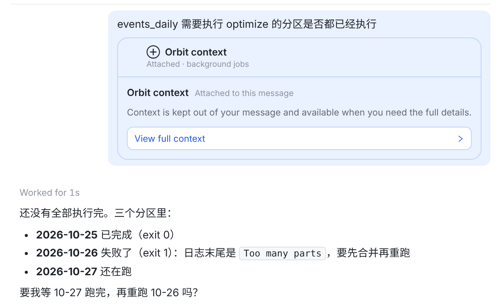
11 一张 163px 的卡占了气泡的大半，粗体标题、蓝边、白按钮，都比你的那句话显眼。
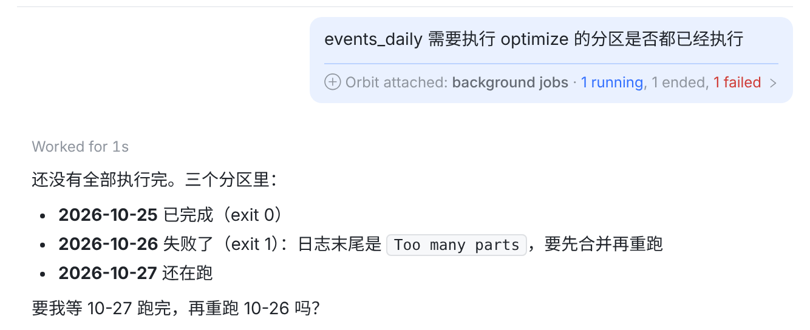
一行，但还在气泡里：气泡被这行撑宽，宽度由它定，不由你的话定；红蓝两色的数字是气泡里最亮的东西。重心还是不在你的话上。
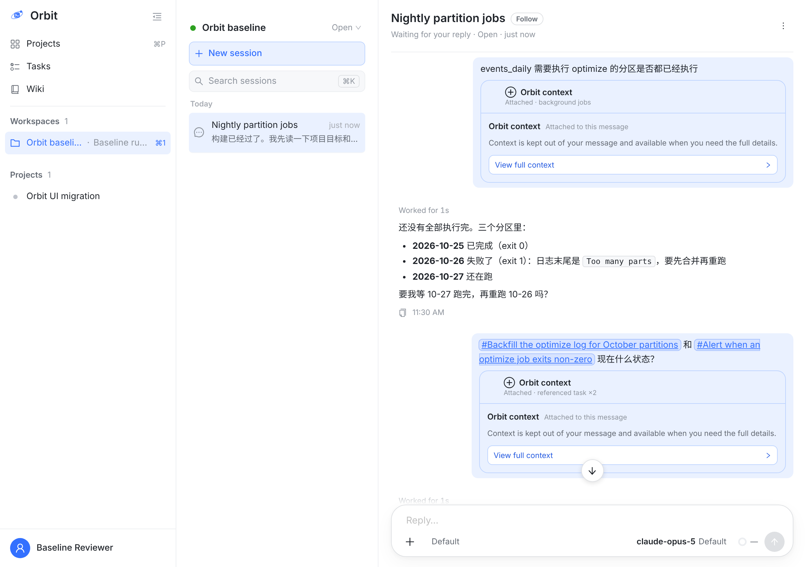
一屏只放得下两条消息，两张卡都比问题本身大。
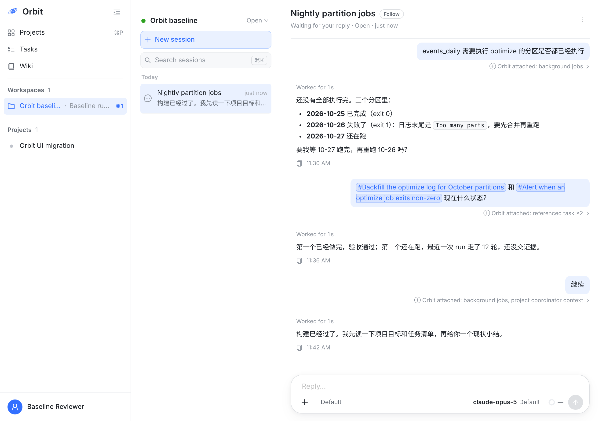
三问三答都在一屏里。一眼先看到的是你问的三句话；灰字是脚注，要找的时候才去看。
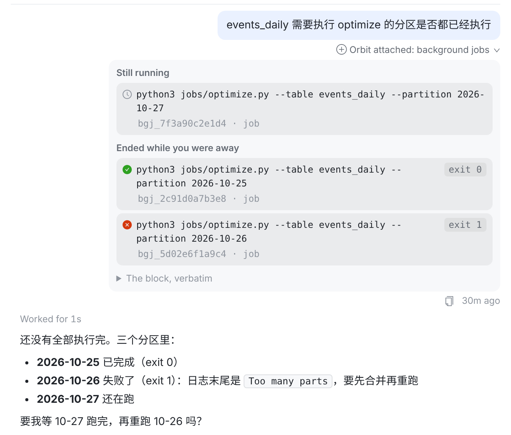
121 气泡不动，还是你那一句。2 下面展开一块浅灰面板，里面是现有的行（还在跑 / 你不在时结束了，失败的红叉、退出码都在这里），原文在 The block, verbatim 里。再点那一行收起。
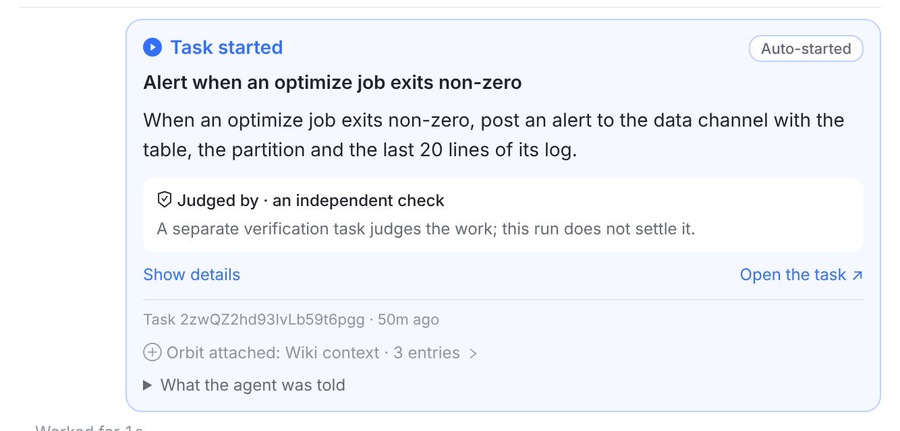
33 任务卡、唤醒行这类卡片里没有「你的话」，卡本身就是 Orbit 的。那一行就是卡底的一行灰字，和上面的 Task … · 50m ago 一样的分量。
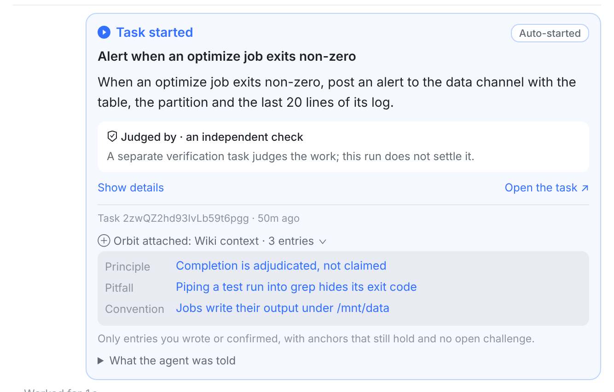
展开在卡里：三条 Wiki 笔记，标题可点。
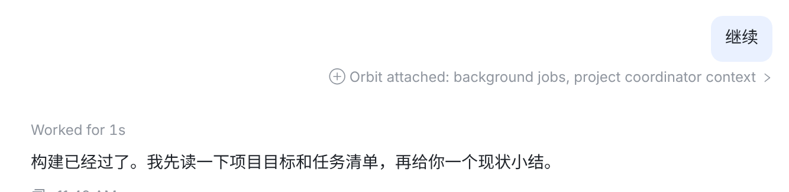
短消息 继续：气泡还是贴着这两个字。带了两块时那行灰字长一些，但它在气泡外，不改变气泡。
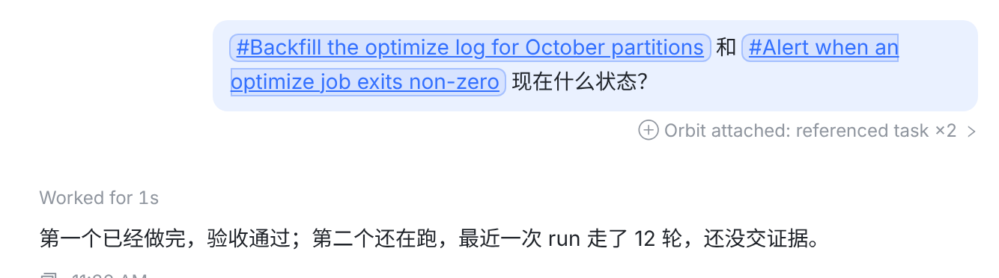
引用了两个任务：状态也收进悬停提示和展开。
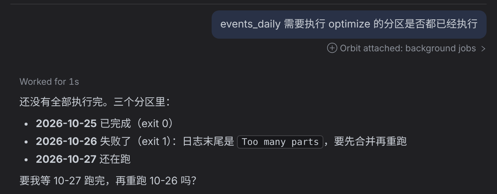
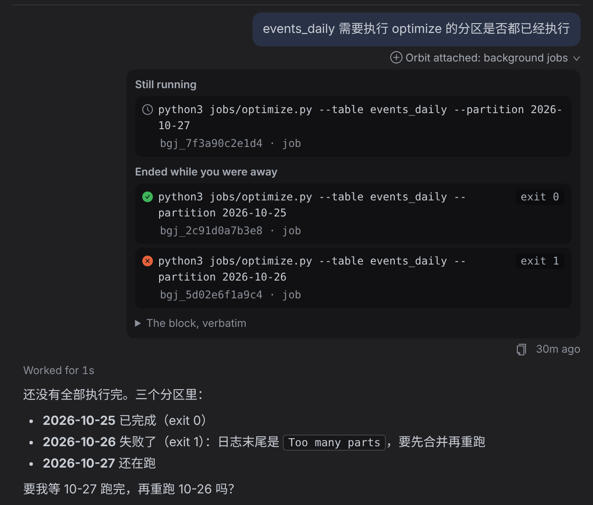
深色：全是现有颜色变量。
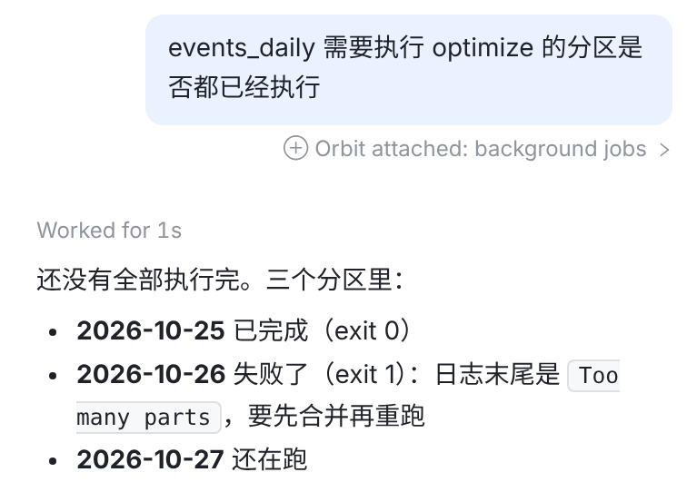
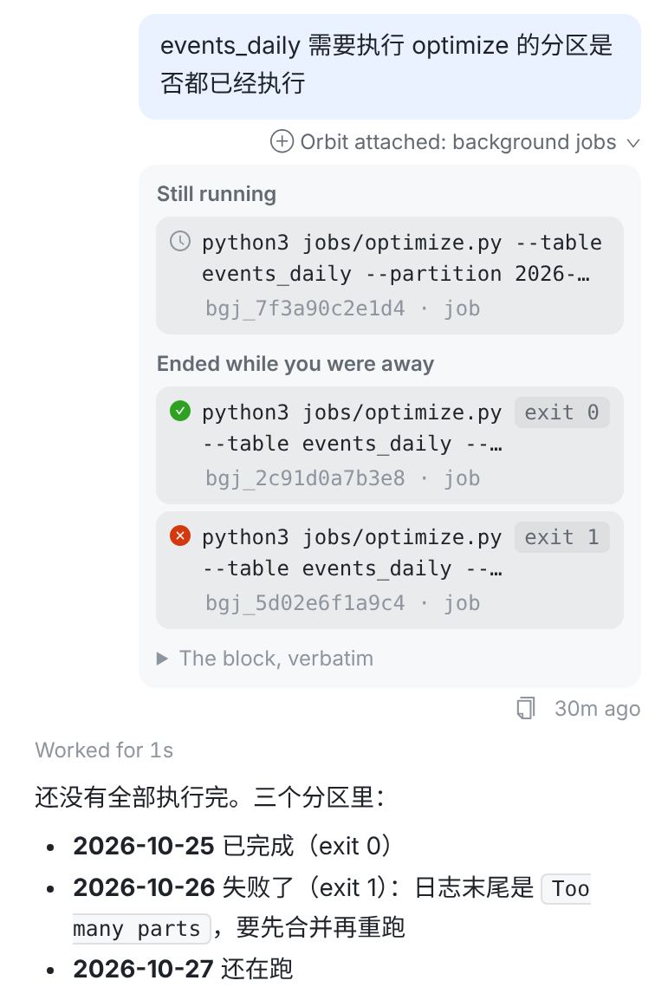
手机宽度：气泡照旧贴着你的字（最多 80% 屏宽），那行灰字放不下就换行。
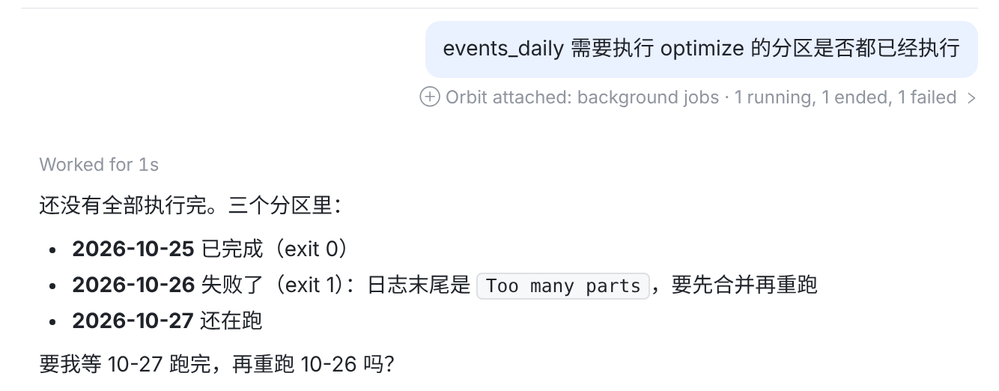
Transcript.tsx：UserBubble 把那一行从气泡里挪到气泡下面；ControlPlaneNote 那一行只写类型，数字进 title / aria-label。index.css 删掉卡片那套。prototype-v2.patch 就是截图用的改动：2 个文件，+70 / −104。indexCss 通过；OrbitKit 读 web 源码的那几行（`⊕ Orbit attached: ${kind}` 等）都还在。UserBubbleView 把 AttachedNoteEntry 从气泡里（分隔线下面那一格）挪到气泡下面；AttachedNoteEntry 改成一行灰字。DeliveredMessageTests 里「画在气泡里、不在气泡下」那条断言，正是这次改的设计，跟着改。TranscriptRowView.kt 把 AttachedNoteCard 挪出气泡、改成一行灰字；AttachedNoteTest.kt、TranscriptDeviceTest.kt:186 的断言跟着改。